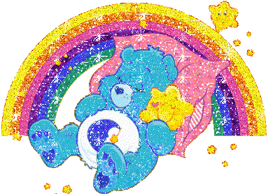
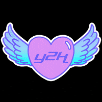

Y2K estetika
Y2K estetika je grafički stil koji se pojavio na prijelazu u novo tisućljeće. Ovaj stil bio je popularan od kasnih 1990-ih godina do ranih 2000-ih godina. Y2K estetiku karakterizira uporaba jarkih boja, kaotični raspored i futuristički izgled. Glavna značajka Y2K estetike je uporaba živih i intenzivnih boja. Boje se u ovom stilu često koriste u kombinaciji s gradijentima kako bi se dizajnu dodao futuristički i privlačan izgled. Još jedna značajka ovog stila je kaotičan raspored elemenata na mrežnoj stranici.

